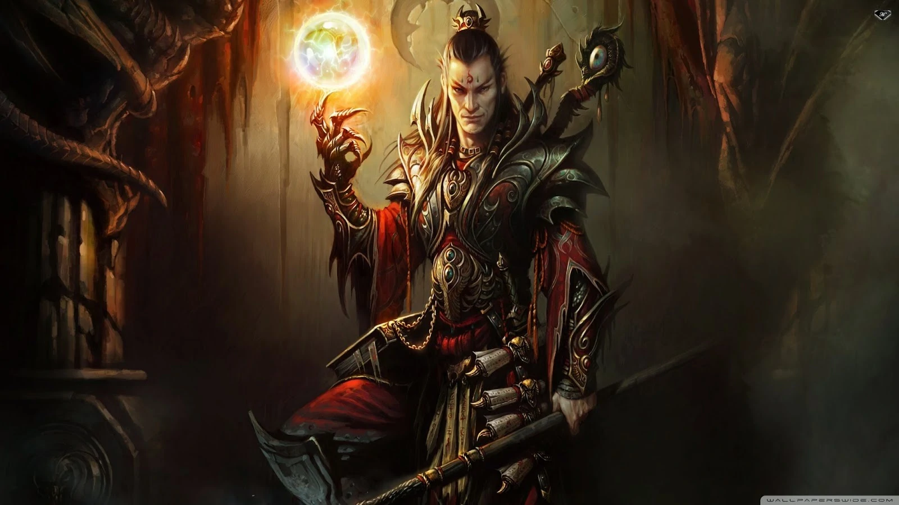
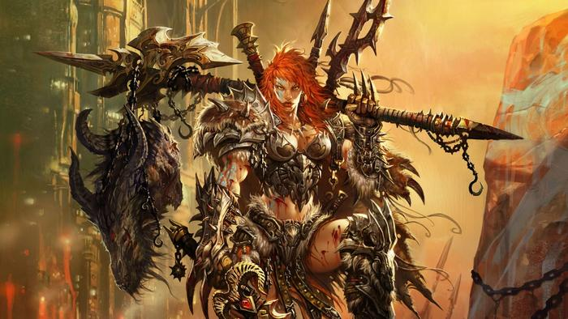
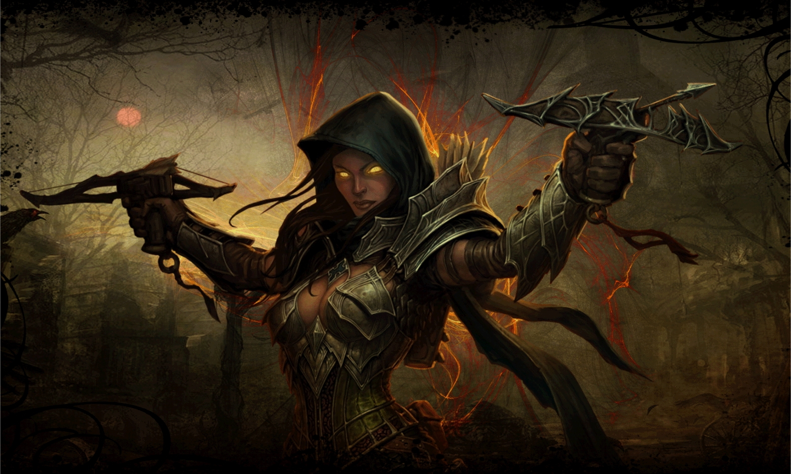
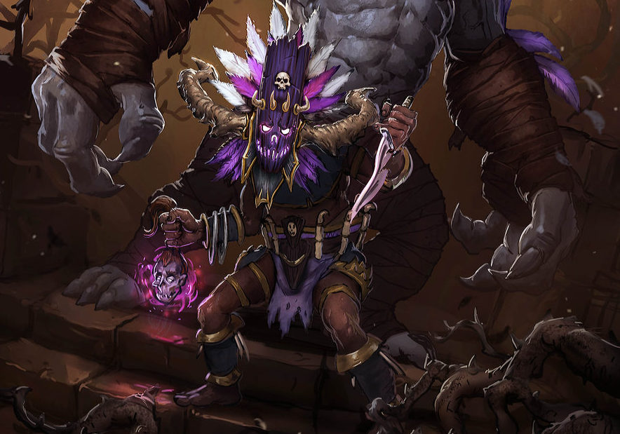
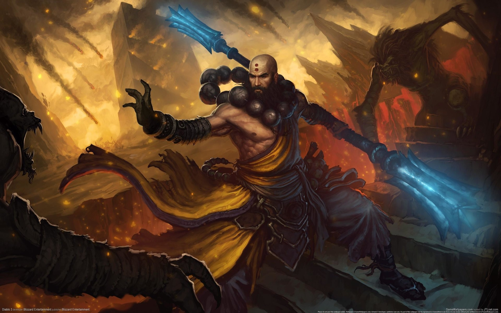

Classes
O jogo possuí 5 classes diferentes umas das outras para escolha do jogador, baseado no seu estilo de gameplay, o jogador pode optar por classes que vão desde magos a longa distância até guerreiros corpo-a-corpo mais resistentes.
Após escolher sua classe é possível definir o gênero de seu personagem e também seu nome.
Diablo III segue a história de seu predecessor, Diablo II: Lord of Destruction, que superou expectativas. A história do novo jogo passa-se depois de vinte anos dos acontecimentos que marcaram o fim de Diablo II. Os guerreiros finalmente derrotaram o mal, mas quando um cometa cai na Terra exatamente no lugar onde Diablo foi confinado, os guerreiros são novamente convocados para defender a humanidade contra o novo inimigo.O estilo do jogo continua o mesmo (visão isométrica), mas desta vez utilizando os recursos das novas tecnologias reproduzindo um mundo totalmente em 3D e interativo, podendo até destruir cenários. Os jogadores poderão escolher entre cinco classes disponíveis (sete após expansões) e se aventurar num mundo mágico e ameaçador que Diablo III proporciona, porém desta vez, com novas habilidades e equipamentos e com um nível de personalização de personagem mais apurado.
-
Diablo I
-
Diablo II
Arcanista:

Portadores de magia, eles são tidos como verdadeiros para-raios para este poder. Assim, podem utilizar ao bel prazer toda a forma de energia, seja ela de fenômenos naturais como também alterar o tempo e o espaço, causando ilusões nos adversários. Tais guerreiros utilizam varinhas e cajados para lançar seus feitiços menos potentes enquanto ganham tempo para reunir a energia necessária para destruir seus adversários com magias mais poderosas. Esta classe pode possuir alguns elementos e ataques voltados para a curta distância, porém se destaca em demasia com golpes a distância. Seu recurso, Poder Arcano é único em Diablo III, uma vez que se regenera de maneira rápida. Porém, deve-se tomar cuidado com o excesso de seu poder, pois pode destruir o corpo dos Arcanistas.
Voltar à lista de classes
Bárbaros:

Como pode-se esperar pelo seu nome, são selvagens e preferem o combate físico. Graças a seu tamanho e força, os Bárbaros podem dominar o combate corpo a corpo com praticamente qualquer combinação de armas e táticas. Entretanto, eles se sentem mais confortáveis com equipamentos pesados, como maçãs e machados. Na mitologia de Diablo, eram exímios guerreiros que defendiam o Monte Ararat. Porém, sua terra foi destruída, mas isso não retirou sua natureza rude. Pelo contrário, este personagem é um dos que mais aguenta ataques de adversários. A raiva que domina os Bárbaros não pode ser contida enquanto eles viverem. Fúria, um recurso que representa o ódio puro e a sede pelo combate, é o combustível para cada golpe brutal.
Voltar à lista de classes
Caçador de demônios:

Seres incansáveis cuja a missão é destruir os exércitos das trevas de Santuário, o território do jogo. Diferente dos anteriores, seu arsenal conta com bestas, arcos e granadas. Assim, seu estilo de jogo, menos brutal, previne que o jogador acabe se mostrando ao adversário. Porém, é neste mesmo sentido que se encontra a maior fraqueza de um dos Caçadores de Demônios, sua habilidade de curto alcance não é uma das melhores. Por fim, e não menos importante, este grupo é o único que conta com dois requisitos, o Ódio e a Disciplina. O personagem terá de tomar cuidado, pois embora a elevação do Ódio seja mortal para seus inimigos, isso o transformará em um alvo facilitado para os inimigos. Por isso mesmo, treina a Disciplina e mantenha o seu equilíbrio interno.
Voltar à lista de classes
Feiticeiros:

Além de usarem de espíritos para atacar os inimigos, eles normalmente usam pestilências e outras formas de destruição. Nesta classe, é comum o uso de maldições, venenos e feitiços que podem transformar um campo verdejante em restos de fogo carbonizado. Além disso, pode também drenar aos poucos a vida de seus oponentes. Como percebe-se em suas características, os Feiticeiros tem um modo de jogo análogo ao do já mencionado Necromante, porém tem um leque de mortalidade bem mais alto. No entanto, cuidado com o uso excessivo de magia, pois ela pode ter consequências. O Mana, recurso válido desta classe vai se elevando lentamente. E por isso, o excesso de ataques pode trazer consequências graves.
Voltar à lista de classes
Monges:

Elevando a velocidade e usando tanto a força espiritual para canalizar a energia existem os Monges. Estes guerreiros, presentes em Diablo III unem a velocidade com a força bruta. Seus golpes podem chegar praticamente a velocidade da luz, sendo mortais quando tocam o adversário. Entretanto, isso não quer dizer que eles não possam usar poderes mágicos. Por conseguirem canalizar estes poderes, especialmente nas mãos, os Monges podem criar verdadeiras rajadas que podem destruir tudo em um curto alcance. Novamente, como este personagem é voltado para um ataque repetitivo, porém perto, é desfavorável para uma tentativa de longo alcance. Seu recurso é o espírito que também vai sendo alimentado lentamente.
Voltar à lista de classes